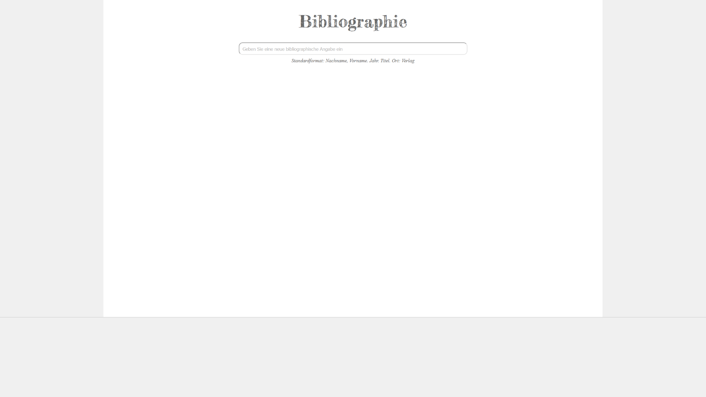
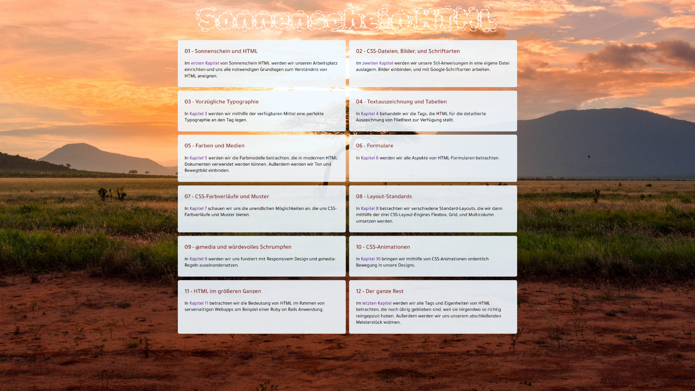
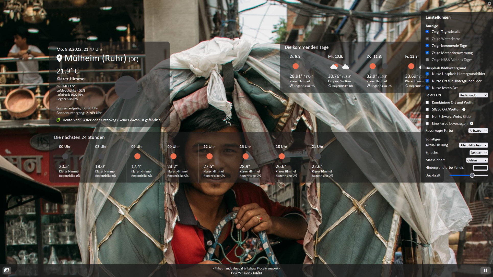
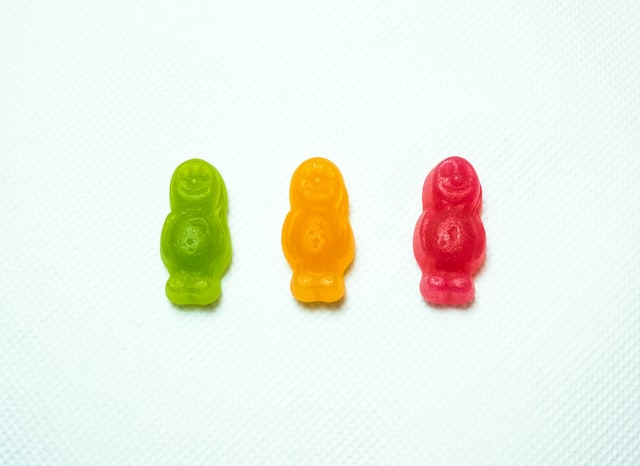

Bibliographie App

Eine App für bibliographische Arbeit
Wird auch wissenschaftlichen Ansprüchen genügen, schick und schlank sein, und nichts kosten.
Mit Ruby on Rails im Backend und einem responsivem Frontend in HTML/CSS/JS.
Sonnenschein HTML

Ein HTML Kurs für alle
Geschrieben in HTML, geliefert in HTML. Auf Deutsch.
Das Wetter

Eine App zur Wettervorhersage
Eine Single-Page App in HTML/CSS/Vanilla JS, mit schicken wechselnden Bild-Hintergründen von Unsplash, Orte- und Hintergrund-Verlauf,
sowie einigen Einstellungsmöglichkeiten - auf Deutsch und Englisch.
Der Ampeltracker

"Versprochen!"
Der Ampeltracker sollte die Versprechen des Koalitionsvertrages der
amtierenden Bundesregierung nachverfolgen.
Die Arbeit daran stellte ich ein, als ich den Koalitionstracker auf Frag den Staat fand,
und mir klar wurde, dass es eines größeren Teams bedarf, um ein solches Projekt sinnvoll zu betreiben.
Leider kein Quellcode verfügbar

")
Alter Ego Arschgesicht
"Ne, is klar, nur gar nicht, also total!"
Hier reflektiere ich autobiographisch über Selbstverachtung, Dissonanz, Buddha, Mama, und Hoffnung.
Licht - Dein Sein
"Alles, was nicht Licht ist, ist Wurst."
Licht ist der Abschluss meines philosophischen Konstruktes.
Hier beschäftige ich mich mit der Bedeutung und den Formen von Erleuchtung, basierend auf den Begriffen aus "Wurst" und "Das zu-sich-selbst-kommende Individuum".
Die Digitale Verfassung
"Vom Volk für das Volk."
Das Projekt bestand aus einem ca. 50-seitigem Buch
und einer prototypischen App zur Veranschaulichung der Idee, dass das gesamte Volk sich digital selbst eine Verfassung gibt.
Nein, ich bin kein Revolutzer, ich interessiere mich lediglich für die Möglichkeiten und Chancen, die unsere digital vernetzte Welt
für die Demokratie zu bieten hat.
Wurst - Dein Hauptwerk
"Die Wurst kennt das Ende der Zeit."
Wurst ist die Welt, die Welt ist Wurst.
In "Wurst" beschäftige ich mich mit den Begriffen "Hunger" und "Gewalt", basierend auf "Das zu-sich-selbst-kommende Individuum".
Apokalypsen

Ein Drehbuch für eine kleine Serie
Die Akteure verursachen versehentlich eine Apokalypse der besonderen Art verursachen,
und erfahren dabei jeweils ihre ganz persönliche Erlösung.
Das zu-sich-selbst-kommende Individuum

"Es gibt nur ein unterdrücktes Individuum."
Das zu-sich-selbst-kommende Individuum in einer
zu-sich-selbst-kommenden Welt ist die begriffliche Grundlage all meiner philosophischen
Reflektionen.
Diese werden in "Wurst" und "Licht" fortgesetzt.